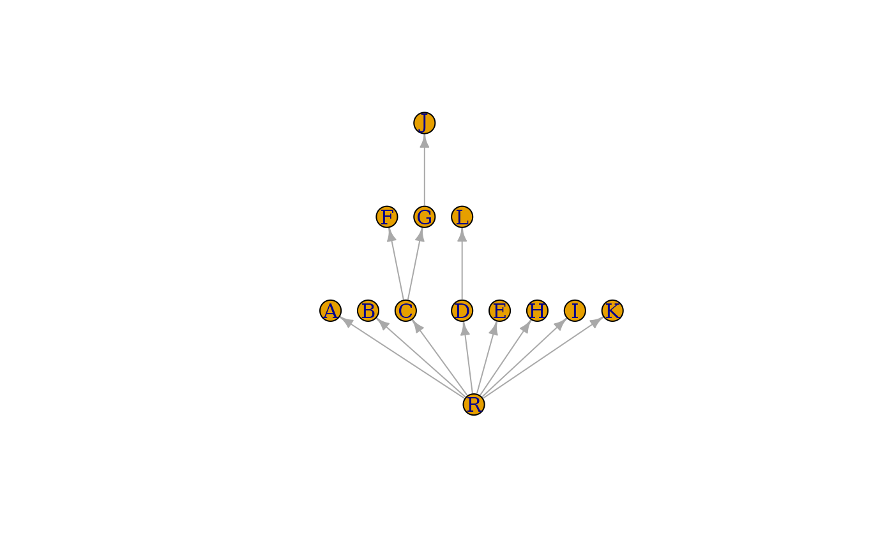

Dominator tree of a directed graph.
Usage
dominator_tree(graph, root, mode = c("out", "in", "all", "total"))Arguments
- graph
A directed graph. If it is not a flowgraph, and it contains some vertices not reachable from the root vertex, then these vertices will be collected and returned as part of the result.
- root
The id of the root (or source) vertex, this will be the root of the tree.
- mode
Constant, must be ‘
in’ or ‘out’. If it is ‘in’, then all directions are considered as opposite to the original one in the input graph.
Value
A list with components:
- dom
A numeric vector giving the immediate dominators for each vertex. For vertices that are unreachable from the root, it contains
NaN. For the root vertex itself it contains minus one.- domtree
A graph object, the dominator tree. Its vertex ids are the as the vertex ids of the input graph. Isolate vertices are the ones that are unreachable from the root.
- leftout
A numeric vector containing the vertex ids that are unreachable from the root.
Details
A flowgraph is a directed graph with a distinguished start (or root) vertex \(r\), such that for any vertex \(v\), there is a path from \(r\) to \(v\). A vertex \(v\) dominates another vertex \(w\) (not equal to \(v\)), if every path from \(r\) to \(w\) contains \(v\). Vertex \(v\) is the immediate dominator or \(w\), \(v=\textrm{idom}(w)\), if \(v\) dominates \(w\) and every other dominator of \(w\) dominates \(v\). The edges \({(\textrm{idom}(w), w)| w \ne r}\) form a directed tree, rooted at \(r\), called the dominator tree of the graph. Vertex \(v\) dominates vertex \(w\) if and only if \(v\) is an ancestor of \(w\) in the dominator tree.
This function implements the Lengauer-Tarjan algorithm to construct the dominator tree of a directed graph. For details see the reference below.
References
Thomas Lengauer, Robert Endre Tarjan: A fast algorithm for finding dominators in a flowgraph, ACM Transactions on Programming Languages and Systems (TOPLAS) I/1, 121–141, 1979.
See also
Other flow:
edge_connectivity(),
is_min_separator(),
is_separator(),
max_flow(),
min_cut(),
min_separators(),
min_st_separators(),
st_cuts(),
st_min_cuts(),
vertex_connectivity()
Author
Gabor Csardi csardi.gabor@gmail.com
Examples
## The example from the paper
g <- graph_from_literal(
R -+ A:B:C, A -+ D, B -+ A:D:E, C -+ F:G, D -+ L,
E -+ H, F -+ I, G -+ I:J, H -+ E:K, I -+ K, J -+ I,
K -+ I:R, L -+ H
)
dtree <- dominator_tree(g, root = "R")
layout <- layout_as_tree(dtree$domtree, root = "R")
layout[, 2] <- -layout[, 2]
plot(dtree$domtree, layout = layout, vertex.label = V(dtree$domtree)$name)
